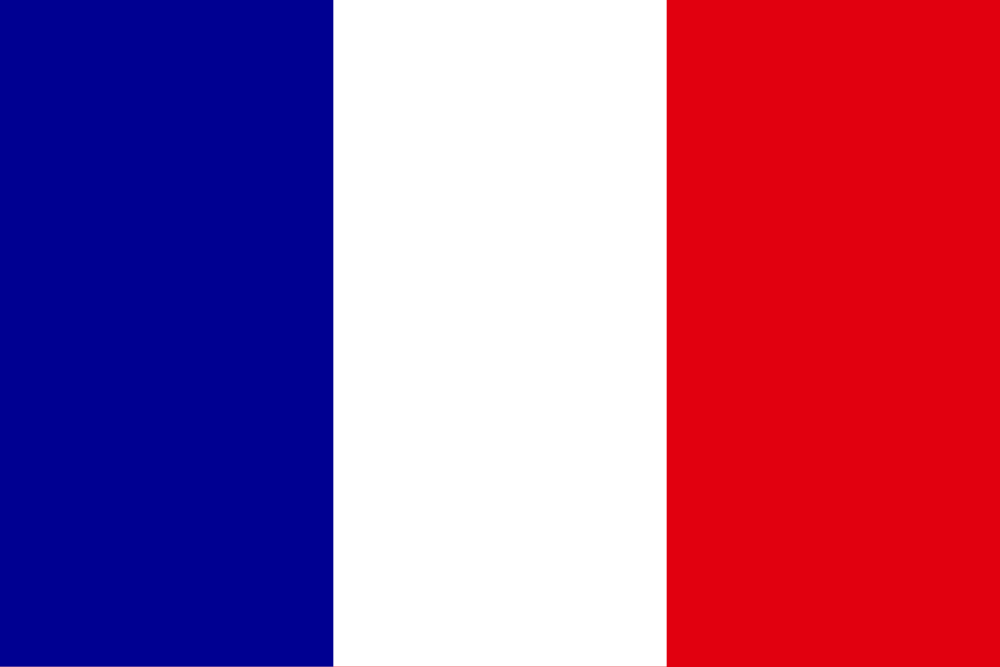

French culture is world renowned for its rich literature, artistic expression, and the famous language. From the historic paintings of Montmartre to the rhythmic beauty of the French language, the French culture is a powerful cornerstone of its people. To truly explore France and to experience the true beauty of its people, customs and traditions, we must first delve into the incredible and historic culture present amongst the people of France. In this guide, we will uncover this breathtaking culture, as we dive into French Art, media and music, the historic and lasting French traditions, the everyday customs of the French people, as well as the language itself which is spoken in many corners of the world. To explore, please select an option below or scroll at your leisure through this guide of France’s incredible culture.

On the world stage, France is famous for its incredible works of art, abstract cinema, and distinct music.